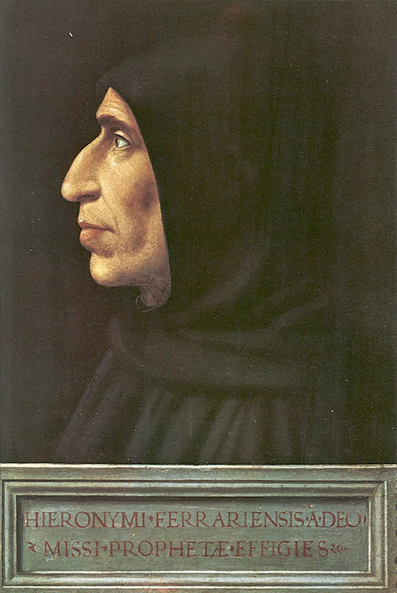

아직 펼치지 않은 카드
아직 펼치지 않은 카드
성탄의 밤을 그린 그림 · 1신비로운 성탄하늘에서는 천사들이 춤추고, 땅에서는 사람들이 끌어안아요. 무슨 일이 일어난 걸까요?천사들이 동그랗게 손잡고 빙글빙글 돌고 있어. 무슨 좋은 일이 생겼을까?
1500년 끝 무렵이탈리아 피렌체 · 지금은 영국 런던 내셔널 갤러리
신비로운 성탄
1500년 끝 무렵, 어지러운 피렌체에서 보티첼리가 성탄 그림 한 점을 그렸어요. 그림 꼭대기에는 그리스어로 쓴 글이 있고, 그 글은 ‘이 그림처럼’이라며 그림 맨 아래를 가리켜요. 화가가 그림 속에 남긴 표시를 하나씩 찾아 읽어 보세요.
옛날 이탈리아의 한 화가가 하늘에서 천사들이 춤추는 성탄 그림을 그렸어. 그림 곳곳에 작은 표시를 숨겨 두었대. 같이 하나씩 찾아볼까?
검수 전 시안이에요(기준서 1판). 장면에는 내셔널 갤러리와 연구 논문에 있는 것만 옮겼고, 학자마다 풀이가 다른 곳은 그렇다고 밝혔어요. 상상은 ‘눈 감고 상상해 보기’에만 썼어요.
시안 확인용카드 단계 미리 보기
1
1500년, 어지러운 피렌체
1494년부터 프랑스 군대가 이탈리아로 내려왔어요. 1494년에는 나폴리를, 1499년에는 밀라노를 차지했어요. 피렌체 안에서도 사람들이 편을 갈라 다퉜어요.
피렌체를 다스리던 메디치 집안이 쫓겨나자, 도미니코회 수도사 사보나롤라의 힘이 커졌어요. 그는 세상의 끝이 다가온다고 설교했고, 1498년에 처형되었어요.

보티첼리도 그의 설교에 마음이 기울었던 것으로 여겨져요. 1496년 종려 주일, 사보나롤라를 따르는 행렬에서 흰 옷을 입은 아이들이 올리브 가지를 들고, 몇은 그 가지로 관을 엮었다는 기록이 있어요.
그때 피렌체 사람들은 걱정이 많았대. 전쟁 소식이 자꾸 들려왔거든.
물어보기마음이 어수선할 때 너는 무엇을 그리고 싶어?
2
그림 꼭대기의 글
그림 맨 위 띠에 그리스어 글이 석 줄 적혀 있어요. 화가가 그림을 보는 사람에게 남긴 짧은 편지 같아요. 우리말로 옮기면 이래요.

“이 그림은 1500년 끝 무렵, 이탈리아가 어지러울 때, 나 알레산드로가 그렸다. 때가 지난 뒤 반 때에, 요한의 열한째 장이 이루어지는 때, 요한계시록의 둘째 화 가운데, 악마가 세 해 반 동안 풀려나 있을 때다. 그 뒤 열두째 장에 따라 악마는 묶일 것이고, 우리는 그를 (…) 이 그림처럼 보게 되리라.”
그림 꼭대기 그리스어 글 · 호른의 영어 번역(해트필드 1995)을 이 안내서가 옮김
‘요한의 열한째 장, 열두째 장’은 요한계시록 11장과 12장이에요. 12장에는 해를 옷 입은 여인이 아기를 낳고, 큰 용이 하늘에서 쫓겨나는 이야기가 나와요.
마지막 줄의 (…) 자리에는 한두 낱말이 지워져 있어요. 보티첼리는 ‘이탈리아의 어려움’이라는 그때의 일을 요한계시록에 비추어 읽었어요. 그리고 그 어려움이 끝나는 날을 그림 맨 아래에 그렸어요.
그림 꼭대기에 화가가 남긴 글이 석 줄 있어. 글 끝에 ‘이 그림처럼’이라는 말이 있대.
물어보기‘이 그림처럼’은 그림의 어디를 가리킬까? 같이 찾아볼까?
3
하늘이 열리고
그림 한가운데는 성탄 밤의 마구간이에요. 위로는 금빛 하늘이 둥글게 열리고, 아래로는 바위 언덕이 이어져요.
세로 109cm쯤 되는 작은 그림이에요. 그런데 이 그림에는 천사만 스무 명이나 나오고, 곳곳에 글과 표시가 숨어 있어요. 일곱 곳을 하나씩 눌러 찾아 보세요.
그림 속 숫자를 하나씩 눌러 보세요. ‘가까이 보기’를 누르면 그 자리를 크게 볼 수 있어요.
보티첼리, 「신비로운 성탄」, 1500년 무렵 · 런던 내셔널 갤러리 · 산드로 보티첼리 그림 · 퍼블릭 도메인 · 위키미디어 공용
그림 위의 숫자나 아래 번호를 눌러 보세요.
꼭대기 글에서 맨 아래 바위 틈까지 다 찾았어요. 화가가 ‘이 그림처럼’이라고 쓴 장면을 끝까지 본 거예요.
그림 속에 숫자 단추가 일곱 개 있어. 하나씩 눌러 보자!
물어보기제일 먼저 무엇을 찾고 싶어? 작은 왕관? 숨은 악마?
4
정의와 평화가 입을 맞추다
그림 맨 아래 풀밭에서, 천사 셋이 사람을 하나씩 맡아 끌어안고 입을 맞춰요. 사람들 머리에는 올리브 잎으로 엮은 관이 있어요.
시편 85편 10절에는 자비와 진리가 서로 만나고, 정의와 평화가 입을 맞춘다는 노래가 있어요. 사보나롤라는 이 말씀을 성탄과 이어 설교했어요. 한 연구는 이 그림 속 포옹을 그 설교와 함께 읽어요.

포옹하는 짝 위의 리본에는 누가복음 2장 14절의 천사들 노래가 라틴어로 적혀 있어요. 하늘에는 영광, 땅에는 평화를 노래한 말씀이에요.
그 발치에서는 작은 악마들이 바위 틈으로 달아나요. 대부분 제 무기에 찔려 쓰러졌고, 하나는 틈새로 굴러떨어진 것처럼 보여요.
이 그림에는 천사가 스무 명이나 나와요. 나라면 어느 천사와 함께하고 싶나요?
천사가 사람을 꼭 안아서 일으켜 줘.
물어보기천사들 발밑에서 누가 도망치고 있을까?
5
로마에서 런던까지
보티첼리는 1510년 무렵 세상을 떠났어요. 이 그림을 누구를 위해 그렸는지는 알 수 없어요. 화가가 자기를 위해, 또는 누군가에게 주려고 그렸을 수도 있다고 보는 학자도 있어요.
그림은 로마의 알도브란디니 별장에서 나와 영국으로 건너갔어요. 1811년 런던 경매에 나왔고, 여러 주인을 거쳐 1878년 내셔널 갤러리가 사들였어요.

1857년에는 맨체스터의 큰 미술 전시회에도 걸렸어요. 그 먼 길 내내, 그림 꼭대기의 글은 맨 아래를 가리키고 있었어요.
이 그림은 먼 길을 지나 영국에 왔어. 그동안에도 맨 위 글씨는 맨 아래 그림을 가리키고 있었대.
물어보기오래 숨어 있던 보물을 찾으면 누구에게 제일 먼저 보여 주고 싶어?
눈 감고 상상해 보기
해가 일찍 지는 겨울 저녁, 화실에 촛불 하나가 켜져 있어요. 붓끝에는 금빛 물감이 묻어 있어요. 창밖으로 종소리와 사람들 웅성거림이 들려요. 화가는 그림 맨 위 띠에 그리스어 글자를 한 자씩 적어 내려가요. 마지막 줄을 쓰기 전에, 그림 맨 아래 천사와 사람이 끌어안는 자리를 한 번 더 바라봐요.
눈을 감아 봐. 금빛 하늘 아래 천사들이 둥근 춤을 춰. 리본이 팔랑팔랑, 작은 왕관이 달랑달랑. 땅에서는 천사가 사람을 꼭 안아 일으켜 줘.
나의 자리
꼭대기 글이 ‘이 그림처럼’이라며 가리킨 곳, 그림 맨 아래를 다시 보세요. 작은 악마들이 바위 틈으로 숨어들고 있어요.
그림 아래에서 천사와 사람이 끌어안아요. 나는 누구와 다시 끌어안고 싶나요?
요즘 꼭 안아 주고 싶은 사람이 있어? 누구야?
마음에 닿는 한 줄을 고르거나 직접 써 보세요. 한 줄을 남기면 이 자리의 도장이 찍혀요. 이 기기에만 저장돼요.
더 깊이
궁금한 칸만 펼쳐 읽어도 괜찮아요.
알고 보면
크기와 재료 세로 108.6cm, 가로 74.9cm의 캔버스에 그렸어요. 그림 위에 그림을 크게 펼친 것 같지만, 실제로는 품에 안을 만큼 작은 그림이에요.
천사가 스무 명 하늘에서 춤추는 열둘, 지붕 위의 셋, 손님을 데려오는 둘, 끌어안는 셋까지 천사가 스무 명이에요. 내셔널 갤러리는 천사들이 모두 평화의 표시인 올리브 가지를 들었다고 소개하고, 한 연구는 하나만 빼고 모두라고 세었어요.
바랜 초록 천사들의 초록 옷은 물감 빛이 바래서 지금은 갈색처럼 보여요. 그래서 흰 옷·붉은 옷 사이에 갈색 옷 천사가 섞인 것처럼 보이기도 해요.
기록마다 다른 점
언제 그렸을까 그림의 글에는 ‘1500년 끝 무렵’이라고 적혀 있어요. 그런데 한 연구는 글 속 ‘때’와 ‘반 때’를 따져 1501년 이른 봄에 그렸다고 봐요.
‘때가 지난 뒤 반 때’ 풀이가 갈려요. 이 말을 ‘천 년 뒤의 오백 년’, 곧 1500년으로 읽은 그 시대 풀이가 있어요. 한 연구는 이 말이 1501년 이른 봄 무렵을 가리킨다고 따져요.
악마는 몇일까 한 연구는 다섯으로 세고, 일곱이라고 쓴 글도 있어요. 바위 틈에 반쯤 숨어 있어서 세는 사람마다 달라요.
세 가지 색의 뜻 흰색·초록색·붉은색을 믿음·소망·사랑으로 읽는 풀이가 많아요. 하지만 사보나롤라는 믿음을 초록과 잇기도 해서, 그렇게 단정하기 어렵다고 보는 학자도 있어요.
지워진 낱말 꼭대기 글의 마지막 줄은 한두 낱말이 지워졌어요. ‘묻히는’으로 채워 읽는 글도 있고, 빈칸으로 두는 연구도 있어요.
보티첼리와 사보나롤라 내셔널 갤러리는 보티첼리가 사보나롤라를 따른 것으로 ‘여겨진다’고 조심스럽게 써요. 한 연구는 그림 꼭대기 글이 사보나롤라의 영향을 분명히 보여 준다고 봐요.
그림과 함께 읽는 말씀
그리스도인들은 이 그림을 성탄과 함께, 다시 오실 그리스도를 기다리는 그림으로 읽어 왔어요. 말씀은 뜻만 옮기고, 본문은 대한성서공회 개역개정으로 이어 드려요.
누가복음 2장 13~14절 목자들 앞에 천사들이 나타나 하늘에는 영광, 땅에는 평화를 노래해요. 그림 속 리본의 말이에요.
시편 85편 10절 자비와 진리가 만나고, 정의와 평화가 입을 맞춰요. 그림 맨 아래 포옹과 함께 읽혀요.
요한계시록 12장 해를 옷 입은 여인이 아기를 낳고, 큰 용이 쫓겨나요. 꼭대기 글이 말한 ‘열두째 장’이에요.
직접 가 보기
확인한 날 · 2026년 11월 18일 · 바뀌기 쉬운 정보라 정기적으로 다시 확인해요
영국 런던 트래펄가 광장의 내셔널 갤러리에 있어요. 매일 오전 10시부터 오후 6시까지 열고, 금요일은 밤 9시까지 열어요. 12월 24~26일과 1월 1일은 쉬어요.
상설 전시는 무료예요. 지금 몇몇 전시실을 고치고 있어서 그림이 다른 곳으로 옮겨질 수 있어요. 가기 전에 미술관 누리집의 그림 페이지에서 지금 걸린 곳을 확인해 주세요.
일곱 곳 모두 찾기 금박
그림 속 일곱 곳을 모두 찾아 읽으면 카드에 금박이 입혀져요.
그림 속 일곱 곳을 모두 찾아 읽기
함께할 천사 고르기 채색
둘 가운데 하나만 해도 카드가 채색돼요.
그림 속에서 함께하고 싶은 천사 고르기
아이와 함께 ‘영화처럼 보기’를 끝까지 보기
근거 보기 (6)
- 내셔널 갤러리: Mystic Nativity(NG1034) — 크기·재료, 적어도 스무 명의 천사와 평화의 올리브 가지, 열두 천사와 흔들리는 왕관, 왼쪽 동방박사와 오른쪽 목자, 세 쌍의 포옹과 숨는 악마, 이탈리아의 혼란(1494·1499), 메디치가 쫓겨난 뒤 커진 사보나롤라의 힘과 1498년 처형, 보티첼리가 그를 따른 것으로 여겨짐, 소장 내력(알도브란디니 별장·1811·1857·1878)
- Rab Hatfield, “Botticelli’s Mystic Nativity, Savonarola and the Millennium”, Journal of the Warburg and Courtauld Institutes 58(1995) — 그리스어 글(호른의 번역, 마지막 줄의 지워진 낱말), 리본의 라틴어 마리아 찬미, 시편 85편과 사보나롤라 설교, 하나만 빼고 올리브 가지를 든 천사, 지붕 위 가운데 천사의 책, 제 무기에 찔린 다섯 악마, 세 가지 색과 바랜 초록, 1496년 종려 주일 행렬, 자기나 남을 위해 그렸을 가능성, 그린 때
- (같은 논문을 읽은 사본 PDF) 해트필드 1995
- Visual Commentary on Scripture, Robin Griffith-Jones: Mercy and Truth are Met Together — 천사 옷의 세 색, 리본에 적힌 마리아를 기리는 말, 아래 리본의 누가복음 2장 14절
- The Brooklyn Rail(2021): The Painter & The Preacher — 세상의 끝이 다가온다는 사보나롤라의 설교, 선물 없이 올리브 관을 쓴 동방박사, 사람을 일으켜 세우는 듯한 포옹, 일곱 악마, 마지막 줄을 ‘묻히는’으로 채운 번역
- 내셔널 갤러리: 방문 안내 — 여는 시간, 쉬는 날, 무료 입장, 공사 중인 전시실
그림·사진·소리 출처
‘처음 만나는 기독교 문화’의 깊은 카드예요. 카드 단계와 남긴 글은 이 기기에만 저장돼요.